Control Circuit 2026 › Tutorial › Chapter 4
Previously we discovered how wires are first-class citizens, and the essential building blocks the engine uses to work out networks and circuit integrity. In this chapter we introduce the Connectivity Engine and build a simple test circuit to use it on. In the next chapter we move on to the wire numbering methods, from manual and semi-automatic through to fully automated numbering.
Again, how fully you use the range and depth of Circuit's automation tools is entirely up to you. The more automation you want, the more groundwork and the better the preparation you need to put in.
The Connectivity Engine serves to validate three things:
The wire numbering engine builds on a successful outcome from the CE, and won’t run while the CE is reporting errors. (Warnings do not block numbering; only errors do.)
Wire Numbering Nodes (WNNs) are placed by you on every wire segment where you want to see a wire number. The CE and the numbering engine supply the logic that marks the same wire with the same number, and wires on different segments, or wires that have crossed a boundary such as a symbol or a terminal, with new numbers. There are many configurable options.
The CE gives a very thorough report on what passes and what fails. With that information it becomes apparent what the extra tools at the bottom of the Wiring menu could be useful for.
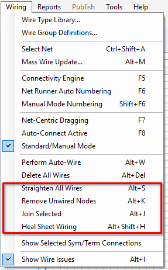
Before we can sensibly use the CE and wire numbering, we need a simple yet valid circuit. It is only a backdrop, so it needn’t be something NASA will approve of. Just get some symbols on the sheet.
Switch to the Symbols palette. Control Circuit ships with some very basic starter libraries: IEC_BASIC, NFPA_BASIC and TERMS_BASIC. Use the drop-down arrow to change library. We will use IEC_BASIC, but NFPA_BASIC works just as well.
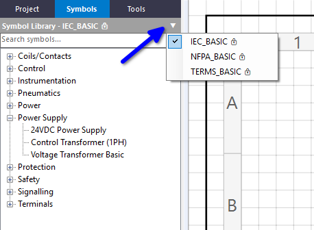
With a symbol selected, you can drag it from the tree list or from the preview image underneath.
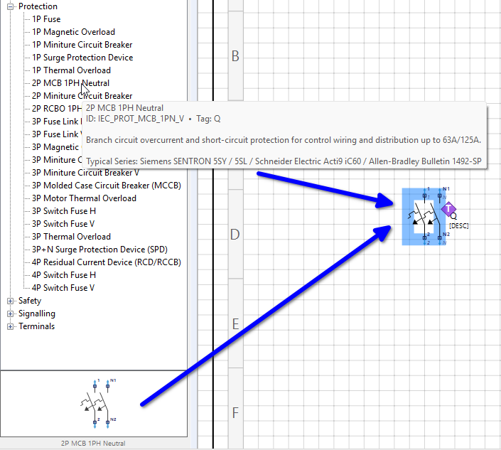
Build up a simple circuit. Here we have a 2-pole MCB, a power supply, a ground symbol, a single-pole MCB and a lamp.
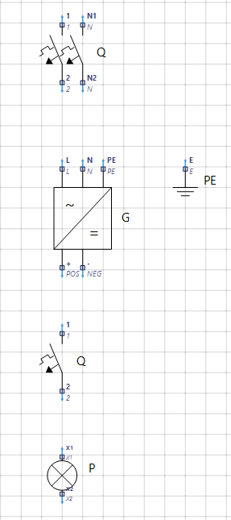
Once you have some components arranged, switch to the Tools palette.
To start, add a couple of End Cap nodes. These can represent incoming supplies or bus-bar ends, and they usefully give wiring a clean start and finish, symbolically, if you want one. Choose the tool, then click anywhere to place the End Cap.
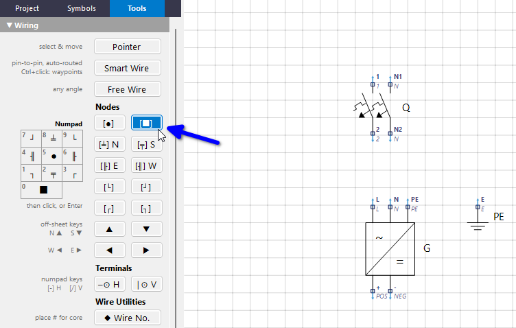
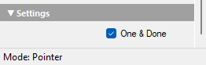
Carry on with the other node types, and outline your intended circuit. Here the red squares are End Caps and the red corners are corner nodes. (There are various tools, such as snap alignment and instant auto-wire, available, but for right now just eyeball it and place the nodes.)
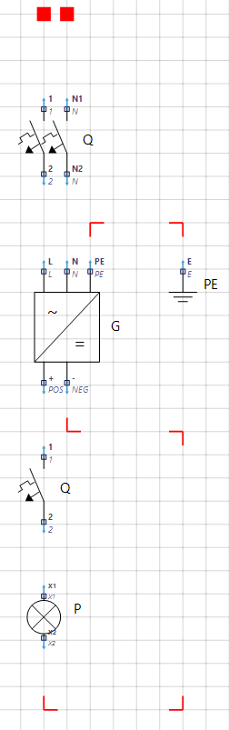
Tap Alt+W to auto-wire the circuit. It looks OK, but the End Caps have joined themselves together, which is not what we wanted. An End Cap has no idea where you want it to go, unlike the other node types, which have directional branches.
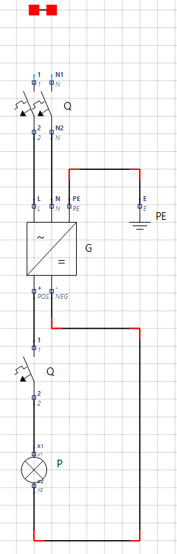
Select the small wire between the End Caps and delete it. Then use the Free Wire tool to run a wire from one End Cap to the correct pin on the MCB, and then from the other.
Free Wire is used because an End Cap is a node, not a pin, so Smart Wire’s pin-to-pin routing doesn’t apply. Free Wire draws at any angle. Here the End Caps sit directly above the pins, so the wires come out straight. If one ever comes out slanted, Alt+S will square it off; we meet that command at the end of the chapter.
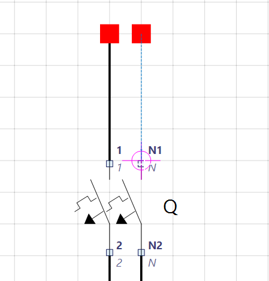
We now have a completed circuit for our purposes.
Before we run the CE, there is one idea worth getting straight, because everything the CE checks hangs off it.
A net is a run of wire that is electrically joined together with nothing in between. The moment the current passes through a device (a breaker, a switch, a power supply, a terminal) one net ends and another begins. Our little circuit is made of 8 nets, although it is drawn with 14 wire segments, because a net can be several segments long, thanks to the corners.
A Wire Group says what a net is: its potential. L1, N, 24VDC, 0VDC, Earth. Every wire in a net must belong to the same Wire Group; a net with two different groups in it is a serious (cross-voltage) error. The same Wire Group is used again and again, on as many nets as you like.
For example, L1 going into the 2P MCB and L1 coming out of it are both Wire Group L1, but they are two distinct nets, because the breaker sits between them.
The CE insists that every wire belongs to a Wire Group, so that is what we will set up here.
A net can also carry a Net Name, a label for that one net. For example, L1_SUPPLY for the L1 going into the MCB and L1_LOAD for the L1 leaving it. Net Names are entirely optional, and our simple circuit does not need any. A name on a wire is there for you: it makes reports and messages easier to read, and the CE uses it for a cross-check, warning you if two separate nets have been given the same name.
Don’t confuse it with the Net Name on an Interruption Node. That one is set on the node itself, and it is the one that matters: two Interruptions sharing a Net Name is what links them, so a signal can leave one place on a sheet, or one sheet, and arrive at another (we met this in Chapter 2).
Now for our first outing with the CE. Tap F5, or choose Wiring › Connectivity Engine.
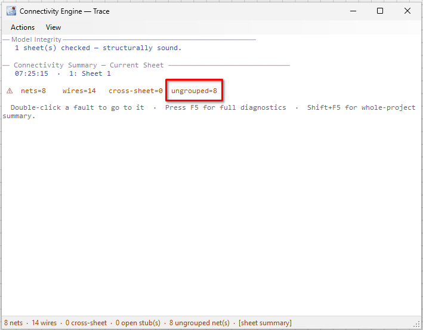
The circuit is sound, but none of the wires have been assigned to a Wire Group. Note that the summary counts nets, not wires: 8 nets, made up of 14 wire segments, and all 8 are ungrouped.
Press Esc to dismiss the window. Because Wiring › Show Wire Issues is ticked, every wire with an issue is highlighted in purple.
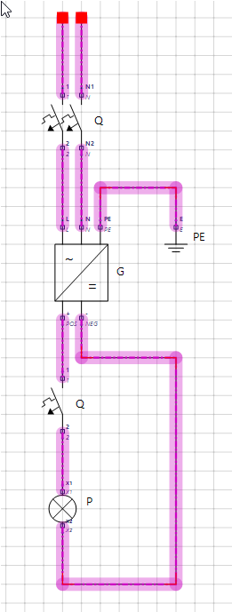
Let’s fix that. We know these two segments are both L1, so select them both, right-click and drill to Wire Group, then choose L1.
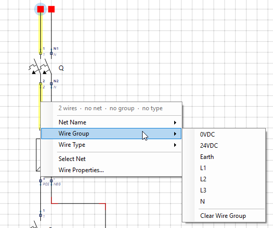
You could do the same for every other set of wires, but there is a quicker way. Select all the wires of one potential, even across several nets, right-click and choose Wire Properties. With more than one wire selected, that opens the Mass Wire Update dialog (also Alt+M from the Wiring menu). Fields left blank are skipped, so we just choose the Wire Group and apply it to all of them at once.
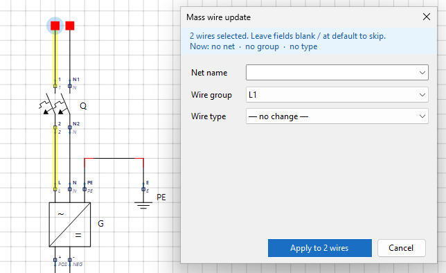
Go around the circuit and update the remaining wires (N, Earth, 24VDC and 0VDC).
Hit F5 again, and the summary turns green.
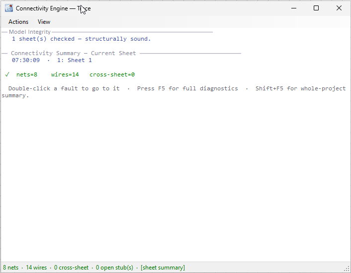
Press F5 once more while the CE window is open and it lists everything it found, net by net, with its Wire Group, and finishes with a summary.
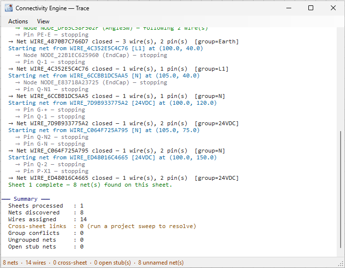
Of course, we have pretty much just done everything the hard way. Now you will appreciate what follows.
The CE can actually solve some problems for you. For example, it can automatically propagate a Wire Group or Net Name across a net, so you only need to set it on one wire in that net. Tap F5 to open the CE, then choose View › Settings.
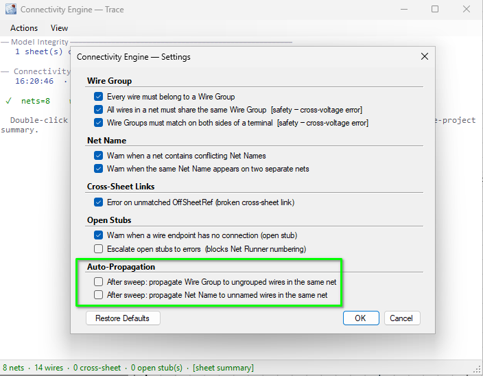
The Auto-Propagation options are switched off by default. Tick them if you want the CE to fill in ungrouped or unnamed wires in a net, once at least one wire in that net already has a Wire Group or Net Name. We will not dig too deep here; just be aware that automation options exist.
The sheet editor has tools of its own, too: the four at the bottom of the Wiring menu.
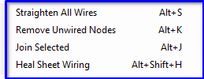
In the next chapter we add WNNs (Wire Numbering Nodes) to our wires and look at the wire numbering methods available, from manual numbering to fully automated. Until then, the program’s help (F1) is the place to dig deeper into anything in this chapter; try searching for Connectivity Engine.